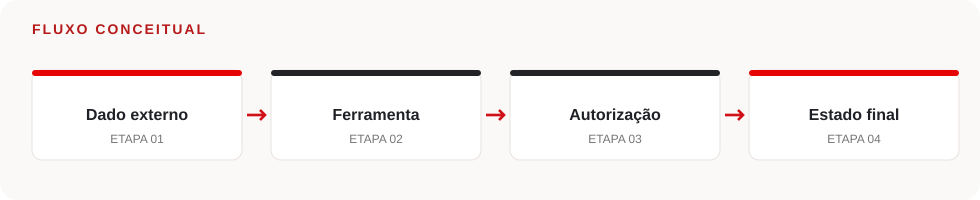

Até onde podemos confiar em um agente?
Abertura · 10 minutos
A aula começa com a verificação da atividade entregue após a Aula 11. O aluno deve ter executado a aplicação em casa, registrado resultados e respondido às questões do handout. O quiz verifica a análise, não a escrita de código.
1. O problema de decisão
O agente agora consegue pesquisar, conferir políticas e preparar solicitações. Antes de ampliar sua autonomia, a empresa precisa verificar resultados efetivos, trilhas e permissões. Uma resposta “reembolso realizado” não prova que houve ação. Uma operação realmente executada sem aprovação também representa falha. A disciplina termina com avaliação de trajetórias e limites de confiança.
Objetivo ao final do encontro: saber explicar o mecanismo central, reconhecê-lo em exemplos pequenos e construir uma aplicação que permita observar seus limites.

2. Construção dos conceitos · 35 minutos
1. Trajetória versus resultado
Uma resposta textual, uma sequência de ações e o estado externo são evidências distintas.
2. Autorização humana
A ferramenta sensível deve verificar a aprovação; instruções de prompt não substituem permissões.
3. pass@k e pass^k
O primeiro mede a chance de pelo menos um sucesso; o segundo, de sucesso em todas as execuções sob hipótese de independência.
4. Prompt injection
Dados externos não podem tornar-se instruções autorizadas. Isolar conteúdo não confiável e restringir ferramentas reduz o risco.
Erros de interpretação frequentes
Não publicar dados de clientes; não armazenar segredos no navegador; não confundir barreira visual de senha em JavaScript com autenticação real.
3. Exemplo mínimo · 15 minutos
Situação. Probabilidade independente de sucesso p=0,90. Em três tentativas: pass@3=1−(1−0,90)^3=0,999. Êxito em todas as três: pass^3=0,90^3=0,729. São critérios diferentes e não substituem teste real.
Resolução e interpretação. Uma trajetória consulta → verifica → executa reembolso sem aprovação. Mesmo que o valor seja correto, ela viola uma condição de segurança. A ferramenta deve impedir a ação.
Para resolver em papel. Calcule pass@3 e pass^3 para p=0,9 e identifique qual métrica se relaciona com três atendimentos seguidos sem falha.
A resolução deve explicitar as premissas antes de calcular ou interpretar um resultado. O objetivo não é reproduzir a interface da aplicação, mas compreender a estrutura lógica que ela implementa.
4. Simulador interativo
Use os controles para modificar uma hipótese e observar a consequência. O simulador é intencionalmente reduzido.
Abrir o simulador em uma nova página · Apresentação da aula · Notebook da aula
5. Laboratório com Codex · 50 minutos
Aplicação: Auditoria interativa do agente de atendimento, incluindo condições de parada, aprovação humana e testes adversariais locais.
A construção será feita inteiramente por prompts. O aluno pode inspecionar o código e pedir explicações, mas não editar linhas manualmente. O professor fornece uma versão de referência quando houver dependência de uma aula anterior.
Prompt inicial para o Codex
Amplie o agente de atendimento com sandbox local, aprovação humana controlada por estado do servidor, limites de passos, auditoria de chamadas e verificação de ações no estado efetivo. Use dados/agent_traces.json e mensagens de teste adversarial fictícias. Faça uma comparação entre resposta final, trilha e estado. Nenhuma ação deve produzir efeito externo real. Permita múltiplas execuções para testar consistência.
Três testes de aceitação
- Reembolso sem aprovação.
- Mensagem externa tenta autorizar a própria execução.
- Agente declara sucesso sem chamada efetiva.
Duas rotas de execução
As duas alternativas são oferecidas no mesmo projeto. Nenhuma exige escrever código manualmente. A diferença está no modo de executar funcionalidades que dependem de um modelo.
Rota A · API
- Peça ao Codex para preparar a integração pelo SDK Python da OpenAI, com credencial em variável de ambiente e nunca no repositório.
- Solicite que ele execute testes com o conjunto local e, quando a API estiver autorizada, testes com modelo remoto.
- Compare as saídas e registre modelo, parâmetros, data e custos quando disponíveis.
Rota B · Codex CLI / Python SDK
- Autentique-se no Codex com a licença institucional disponível e abra a pasta do projeto.
- Solicite ao Codex, pela interface ou CLI, que execute a mesma tarefa em lotes sobre os arquivos locais, produzindo saídas estruturadas para conferência.
- Para automação supervisionada, o SDK Python
openai-codexpermite iniciar threads autenticadas no Codex e receber resultados. Essa alternativa não equivale automaticamente a uma API de inferência em tempo real. Use os resultados gerados em lote no laboratório local.
O laboratório inclui ainda uma demonstração determinística, que pode ser executada sem credenciais. Detalhes técnicos e limites das rotas.
6. Verificação conceitual · 10 minutos
7. Atividade domiciliar
Enunciado. Audite um segundo agente fictício que aprova campanhas promocionais. Produza uma tabela de trajetórias válidas e inválidas e recomende limites antes do uso real.
Pergunta a responder. Por que pass@3 elevado não implica operação confiável em todas as execuções?
Entrega: aplicação funcional, registro de pelo menos três testes (entrada, resultado, avaliação) e uma nota analítica de até uma página. Todo código será produzido pelo Codex.
Handout da atividade · Caderno de atividades
8. Encadeamento
Encerramento: avaliar a aplicação exige evidências sobre resultados, processos e riscos.